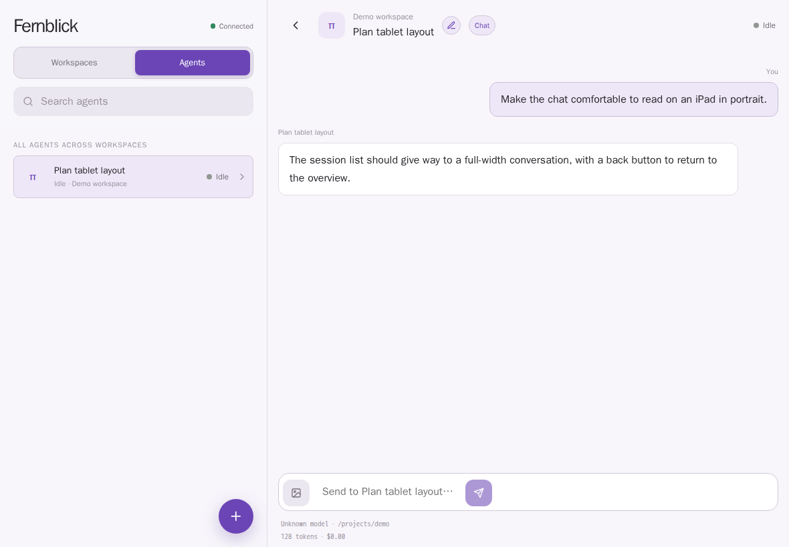
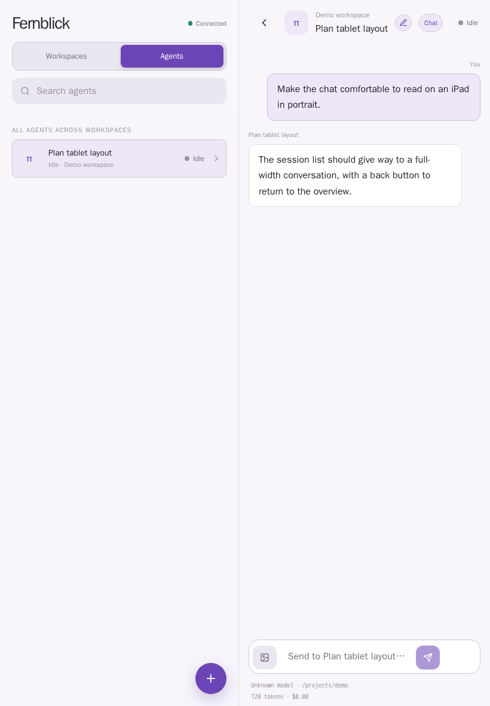
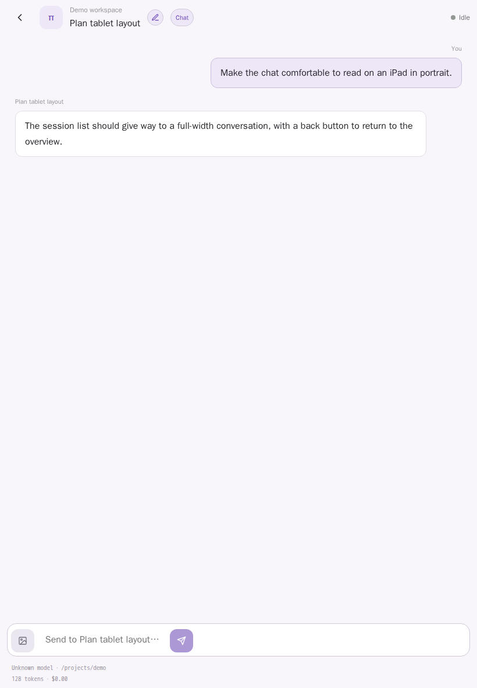
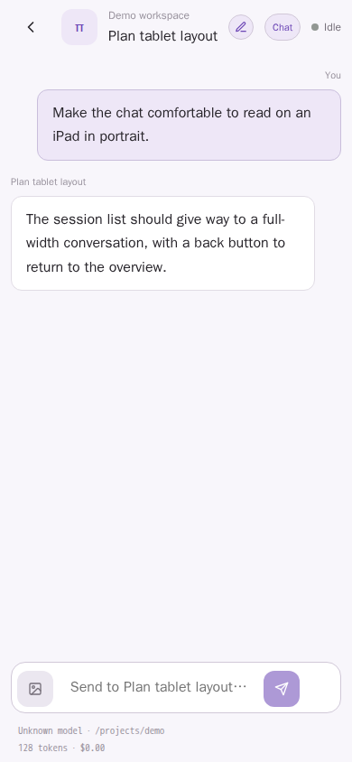

iPad landscape · 1180 × 820


Playwright captures at 1× pixel density with a synthetic demo agent and conversation. Portrait now gives chat the full width; landscape retains the two-column layout. Phone remains single-pane.




